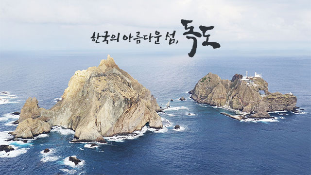

512년, 신라 지증왕 13년에 이찬 이사부 장군이 우산국, 현재의 독도를 복속하였다. 1693년에는 안용복이 일본으로 건너가 일본 관백의 울릉도 출어 금지 공한을 받고 독도가 조선 영토임을 확인하였다. 그 후 1696년 안용복은 2차로 일본에게서 울릉도와 독도에 침범하지 않겠다는 약속을 받아냈다.
1881년, 울릉도 개척령으로 개척 정책이 시행되었다. 그리하여 1990년, 대한제국 칙령 제41호를 제정 및 반포하여 울릉도를 울도로 개칭하고 도감을 군수로 하며, 독도를 강원도 울도군 관할로 편입하였다. 그 후 1906년에 울릉도, 독도의 관할권이 강원도에서 경상남도로 이속되며, 심흥택의 보고서로 처음으로 독도(獨島)라는 명칭을 사용하였다. 1914년에는 경남 울도 군에서 울릉도, 독도의 관할권이 경상북도 울릉군으로 이속하여 현재에 이르게 된다.
이러한 독도는 1999년, 국가 지정 문화재 관리 단체 지정 및 천연기념물 제336호 독도 관리 지침 고시되었으며, 동시에 문화재 명칭이 독도 해조류 번식지에서 독도 천연 보호 구역으로 변경되었다.
